Drill Down plugin
Introduction to the DrillDown plugin
|
|
DrillDown plugin - Manual - Shop - Licence : Once-off - This TC Drill Down plugin enables you to review all your filtered data and export it to i.e. MS Excel. |

The "TC Drill Down" plugin for osFinancials offers a robust solution for delving into your data and creating customised reports quickly and efficiently. Whether you're looking to analyse transactions, track customer invoices, or monitor stock item sales, the DrillDown plugin provides powerful features to streamline your processes. Here's an introduction to its key functionalities:
Transactions
All the transactions in the Set of Books will be populated in the transactions view. You may filter and sort the views in the powerful grid to build your own custom views of the transactions.
Customers → Invoices
Here you can locate your customer and see his invoices. The invoices show the items the items that where both. It has a good a quick navigation interface the helps you hunt down any invoice. The key element here is that you know what client has this invoice. You may print specific invoices directly from the interface by double-clicking on them.
Invoices → Stock item
Here you can find all you invoices and the stock items that were sold on the invoice. It is a fast way of just finding that invoice if the invoice number is what you got. You may print specific invoices directly from the interface by double-clicking on them.
Stock item → Invoice
See what invoices where used to sell this stock item. Giving you the ability to find an invoice if you now the stock item. Just find that item and if it was sold you will find the invoice with that.
Charts
The Charts view of your sales documents, during the selected dates will visually display the sales data in the following graphs:
- Total sales:
- Total sales : Your total sales per day are displayed in a pie chart. Your inventory items or products are displayed as parts in different colors per day. It will visually display at a glance the day or days in which the most sales occurred.
- Total sales per day : Your total amount of sales per day is indicated in a bar graph. It will visually display as amounts the day or days in which the most sales occurred at a glance.
- Total quantities:
- Total sales quantities : Displays the total quantities of your inventory items or products sold during the selected dates in a pie chart. The total quantities of your inventory items or products sold will be displayed as parts in different colors per day. It will visually display at a glance the inventory items or products that are the top sellers during the selected dates.
- Total sales quantities per day: The total quantities of your stock items or products sold during the selected dates are visually represented in a bar graph. It will visually display at a glance the number of inventory items or products that are the top sellers during the selected dates. It will graphically display how certain days affect the quantities of inventory items or products.
Export data
You may export data from all views (except the Charts-option) to XML, HTML, Excel, or Text files, facilitating further analysis or integration with other tools.
Using the DrillDown
To use this option, you need to open a Set of Books. When the DrillDown is launched, it will by default list all the transactions in the database of the active (opened) Set of Books.
To launch the TC Drill Down:
- On the Setup ribbon, select Plugins → Financial tools → DrillDown. If this plugin is not listed under Plugins → Financial tools, activate it via Tools → Activate plugins.
|
|
If the DrillDown plugin is not available from the Plug-ins → Financial tools → DrillDown menu, you need to Activate the Drill down plugin. To do this go to the Tools → Activate plugins on the Setup ribbon. |

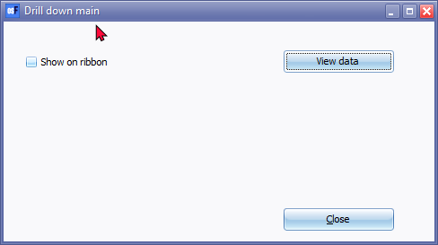
|
|
Optional - You may select to "Show on ribbon" option to add the TC Drill Down icon to the Default ribbon. This will only be added for the active (opened) Set of Books. 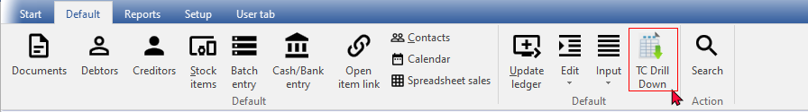 |

- Click on the View data button to launch the "TC Drill Down" plugin (Transactions).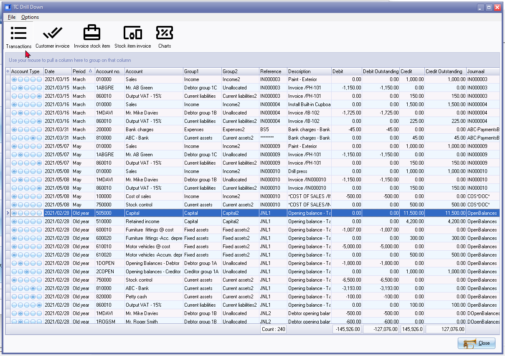
- You may use various options to sort and/or filter your data.
- For example, if you need to check your sales for a specific date, select the date in the date column, and the sales in the account column.
Transactions
The default view when TC Drill Down is launched, is Transactions.
When you launch the "TC Drill Down" plugin, the default view is the Transactions view. This view provides an overview of all transactions within your Set of Books.
Here's how you can customize and utilize filter options within the Transactions view to meet your specific requirements:
- Customize Data Columns:
- You can customize the data columns displayed in the Transactions view according to your preferences.
- Choose which columns to display based on the information relevant to your analysis.
- Utilize Filter Options:
- The plugin offers various filter options to refine the displayed data according to specific criteria.
- Filters allow you to focus on transactions that meet certain conditions, such as date range, account type, transaction type, etc.
- Export Data:
- Once you've customized the view and applied filters to display the desired subset of transactions, you can export this data.
- Only the data visible in the customized view, along with the selected sequence of data columns and applied filters, will be included in the exported files.
- Further Analysis and Actions:
- After exporting the data, you can perform further analysis using external tools such as Microsoft Excel or LibreOffice Calc.
- Identify trends, anomalies, or specific transaction details to inform decision-making or address any issues within your financial records.
By leveraging the customization and filter options within the Transactions view of the "TC Drill Down" plugin, you can tailor your analysis to focus on the specific data elements and criteria relevant to your needs. This flexibility allows for efficient data exploration and analysis within your osFinancials Set of Books.
Show / hide / move columns
By default, all columns, except the "Transaction no., Batch no., Debit tax" and "Credit tax" columns) is not available.
You may add these manually by selecting those columns. You may select only those columns you need to see.
|
Visible columns (Options → Columns menu) |
Default * Click here to show/hide/move columns |
Sorted (selected) - Alphabetical list |
|
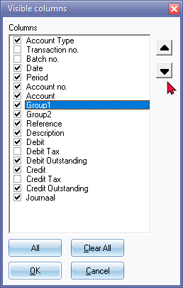 |
|
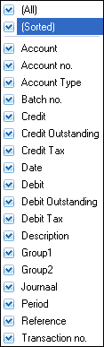 |
Hidden columns will not be included in an export files.
In the Transactions option of the "TC Drill Down" plugin, you have the ability to show, hide, or move columns according to your preferences. By default, only certain columns are visible, but you can manually add or remove columns as needed.
Here's an overview of the available columns and their descriptions:
- Account Type - There are five (5) account types (i.e. Bank, Creditor, Debtor, General ledger and Tax).
- Transaction no. - The number of the Transaction in the Transaction table of the database.
- Batch no. - This is the number of the batch (journal) as allocated by osFinancials. The last column (i.e. “Journaal”) displays a more friendly version of the Batch no.
- Date - The date of the transaction.
- Period - The accounting period (e.g. Month) of the transaction. "Last year" is the previous financial year.
- Account no. - The account code for Bank, Creditor, Debtor, General Ledger and Tax accounts.
- Account - The description or account name.
- Group1 - Account group 1 for Bank, General Ledger and Tax accounts. Creditor Group 1 for Creditor accounts and Debtor Group 1 for Debtor accounts.
- Group2 - Account group 1 for Bank, General Ledger and Tax accounts. Creditor group 1 for Creditor accounts and Debtor group 1 for Debtor accounts.
- Reference - The reference as entered in the Reference column of batches and in the case of sales documents (i.e. Invoices, Point-of-Sales Invoices and Credit notes) and purchase documents (i.e. Purchases and Supplier returns), the document number will be displayed.
- Description - The description as entered in the Description column of batches. In the case of documents, the description is as follows:
- Sales account - Stock Item's description.
- Cost of Sales and Stock Control account - COST OF SALES/Document number.
- Creditor account - Document type/Document number.
- Debtor account - Document type/Document number.
- Tax (Input and Output Tax) - Document Type/Document number.
- Debit - Amounts entered or generated as balancing entries in the Debit column of batches. In the case of documents, the description is as follows:
- Debit tax - Amounts entered or generated as balancing entries in the Debit column of batches. In the case of documents, the description is as follows:
- Debit Outstanding - Outstanding amounts in the Debit column. This is usually the same, as the Debit amount, unless a credit transaction have been linked to the debit transaction to an Open Item account.
- Credit - Amounts entered or generated as balancing entries in the Credit column of batches. In the case of documents, the description is as follows:
- Credit tax - Amounts entered or generated as balancing entries in the Debit column of batches. In the case of documents, the description is as follows:
- Credit Outstanding - Outstanding amounts in the Credit column. This is usually the same, as the Credit amount, unless a debit transaction have been linked to the credit transaction to an Open item account.
- Journaal - This is the Alias (Batch name). If the "Change alias" option on batches were used before posting batches, the Alias will be displayed. Should the aliases of batches not be used, more than one batch (with the same name) will be listed. You may then need to use the Batch no. to filter for a specific batch. In the case of documents, the Document no. will be displayed.
You can customise the visibility and order of these columns using the "Visible columns" option in the menu. Hidden columns will not be included in export files, ensuring that only relevant data is exported. This flexibility allows you to tailor the view to your specific needs, facilitating efficient analysis and reporting within the Transactions option of the "TC Drill Down" plugin.
Move column sequence
In the Transactions option of the "TC Drill Down" plugin, you have the ability to change the sequence in which the data in the columns is displayed. This feature allows you to customize the layout of your data according to your preferences.
In addition to the option in the "Visible columns" screen (Options → Columns menu) you can change the order (sequence) in which the data is displayed in the columns, by simply clicking on a selected column and drag it to the desired position (left or right.
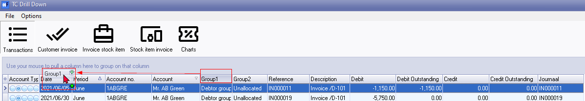
By moving column headings in the Transactions option, you can organize your data in a way that makes it easier to analyse and interpret. This customisation feature allows you to prioritise the display of information based on its relevance to your analysis, enhancing your workflow efficiency within the "TC Drill Down" plugin.
Group / Ungroup columns
Select a column and click on it. While holding the mouse button down, drag it to the column header bar "Use your mouse to pull a column here to group on that column". Select any other column to drag and drop it on column header bar. You may select as many columns, as necessary, to group your data.
You may also drag and drop these columns to the right or left to change the grouping of these columns.
In the Transactions option of the "TC Drill Down" plugin, you have the ability to group and ungroup columns to organize your data according to specific criteria.
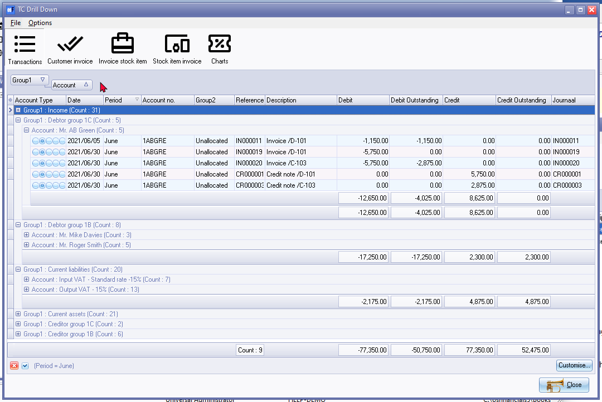
Remove grouped columns
To remove a column from column header bar "Use your mouse to pull a column here to group on that column", you may use the following two (2) options:
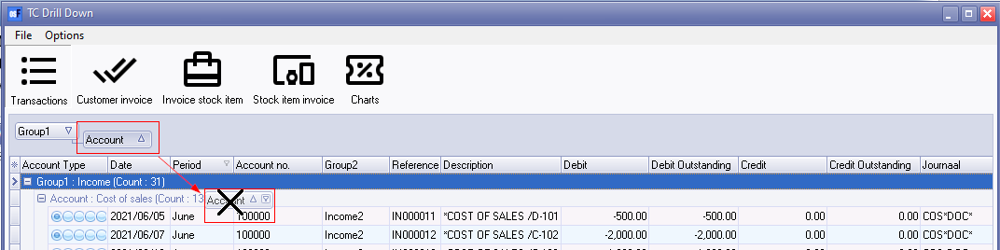
- Select the column heading (e.g., “Account”) on column header bar "Use your mouse to pull a column here to group on that column", and drag it to the first line (above the column headings). When the mouse pointer change to a big X, drop it. The column will automatically be placed in the correct default sequence (or the place of the previous grid layout).
- If you wish to change the column to a specific place, select the column heading (e.g., “Account”) on column header bar "Use your mouse to pull a column here to group on that column", and drag it to the first line (column headings). When you drop it, the column will be added to the selected position or sequence of the columns.
By utilising the group and ungroup column features, you can organize your data effectively within the Transactions option of the "TC Drill Down" plugin. This allows for better analysis and visualization of your financial information based on specific criteria and groupings.
Sort sequences
All the data is, by default, displayed ascending; from the smallest to the highest value (e.g. a-z or 0-9) according to the Period (e.g. April, February, March, etc.).
To change the sort order from ascending (e.g. a-z or 0-9) to descending (e.g. z-a or 9-0) select a column which you need to sort) and click on it. If you click on the same column again, it will change back to ascending sequence.
In the Transactions option of the "TC Drill Down" plugin, you have the ability to sort data sequences to facilitate easier analysis and interpretation. By default, data is displayed in ascending order, but you can change the sort order to descending if needed.
By adjusting the sort sequence in the Transactions option of the "TC Drill Down" plugin, you can organise your data according to your preferences, making it easier to analyse and interpret information effectively. This feature enhances the usability of the plugin, allowing for more efficient data exploration and analysis within osFinancials.
Filter options in column headings
While viewing and analysing the data you may sort and filter the data, in each column of the active or loaded table. To do this, select the column and click on the filter icon. A list displaying the data, as well as an "All" option and a "(Custom...)" option in the selected column will be displayed.
For example, the "Account" column, is selected, a list of all "Accounts" will be displayed.
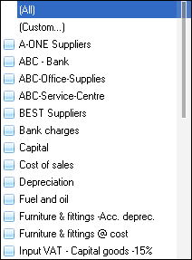
You may select those account you wish to list. Only the transactions for the selected account(s) will be listed.
To adjust a filter in a column, select the "(Custom...)" option in the selected column. The "Adjust filter" will be displayed:
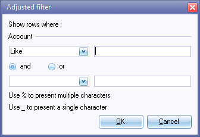
In the Transactions option of the "TC Drill Down" plugin, you have the capability to apply filters to column headings, allowing you to refine and focus your data analysis.
The type of filter options/conditions available for data manipulation can vary depending on the nature of the data contained within the column. Some common Filter options is as follows:
- Equal to - Lists or displays all values that are exactly the same as the specified value.
- Not equal to - Lists or displays all values that are not exactly the same as the specified value.
- Less than - Lists or displays all values smaller than the specified value.
- Less than or equal to - Lists or displays all values smaller than or equal to the specified value.
- Greater than - Lists or displays all values greater than the specified value.
- Greater than or equal to - Lists or displays all values greater than or equal to the specified value.
- Like - Lists all values in the table similar to the specified value using pattern matching (often with wildcard characters).
- Not like - Lists all values in the table not similar to the specified value using pattern matching.
- Is null - Excludes any rows where the value is missing (NULL), meaning they will not be listed or displayed.
- Is not null - Lists or displays any rows where the value is not missing (NULL).
- Start with - Lists or displays values where the text starts with the specified string.
- End with - Lists or displays values where the text ends with the specified string.
- Include - Lists or displays all values that match any of the specified values. This option is useful when you want to filter for multiple specific values.
- Not include - Lists or displays all values that do not match any of the specified values. This option is useful when you want to exclude specific values from the result set.
By utilising the filter options in column headings, you can refine your data analysis within the Transactions option of the"TC Drill Down" plugin, allowing for more focused and insightful examination of your financial data.
Adjusting filter options based on the data type ensures that you have access to the most relevant and effective tools for manipulating and analysing your data. This flexibility enhances usability and allows for more efficient data exploration and decision-making.
Working with custom filters
Once you have selected an option on a list, the your selection will be displayed at the bottom section of the"TC Drill Down" screen as follows:
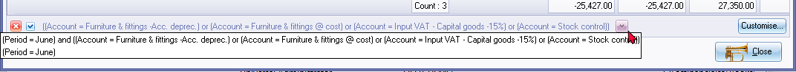
The selected filters will be listed. You may select any filters for quick access to previous filter options. You may click on the Customise button to:
- Make a filter (add or delete conditions and groups).
- Save a filter.
- Open a filter.

To make a filter:
- Select a column and click on the Filter button (or on the … button) and select one of the following options on the context menu:
- New condition
- New group
- Delete row (If you click on the Filter button, you may delete the rows (conditions and groups).
- Select the or option to set a filter value. The following options are available:
- New condition
- New group
- Once you have created your conditions or groups, click on the Apply button.
- Click on the OK button to close and exit this "Make filter" screen.
To save a custom filter file:
- Once you have sorted or filtered your data with the "Make filter" screen, click on the Save as.. button. The "Save active filter" screen will be displayed.
- Select a directory in which you wish to save the custom filter file.
- Enter a file name.
- Click on the Save button to save the Filter in a (*.flt) Filter file format. You may then at any later stage open the saved *.flt file.
To open a saved a custom filter file:
- Once you have sorted or filtered your data with the "Make filter" screen, click on the Open... button. The "Open a saved filter" screen will be displayed.
- Select a directory in which you have saved the custom filter file.
- Select a valid filter file.
- Click on the Open button. The selected filter file's name will be displayed in the titlebar of the "Make filter" screen.
Working with custom filters in the "TC Drill Down" plugin allows you to refine and save filter settings for quick access to specific data views.
By utilizing custom filters, you can save time and effort by quickly accessing predefined filter settings for your data analysis needs. Whether you're refining data views for specific criteria or reusing previously defined filters, the "TC Drill Down" plugin offers flexibility and efficiency in managing your data within osFinancials.
Customer invoice
The "Customer → Invoice" option in the "TC Drill Down" plugin lists all customers and their respective invoices, allowing you to sort, filter and view quantities of ordered and shipped stock items along with total invoice amounts, and to print invoices directly from the interface.
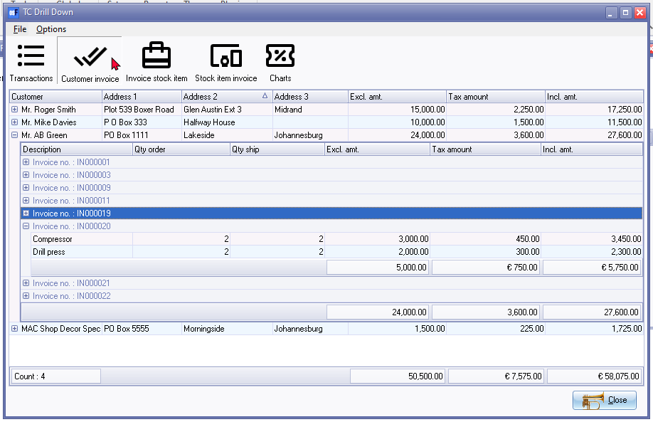
The Customer invoice option lists all your customers (debtors or clients). For each customer account, it displays up to three address lines and the total of all invoices (excluding tax, tax amount, and including tax). You can sort columns or use custom filters to search for a specific customer.
Expanding a specific customer account reveals all posted and unposted invoices. Each invoice displays quantities of ordered and shipped stock items, along with the total amount (excluding tax, tax amount, and including tax) in columns. You can also sort columns or use custom filters to search for an inventory item or product.
Additionally, you can print specific invoices directly from the interface by double-clicking on them.
By leveraging the Customer invoice option of the "TC Drill Down" plugin, you can efficiently manage customer transactions, track sales, and maintain clear communication with customers regarding their invoices. This feature enhances your ability to provide excellent customer service and ensures accuracy in your financial records within osFinancials.
Invoice stock Item
In the Invoice stock item option of the "TC Drill Down" plugin, you can quickly find invoices and the stock items that were sold on each invoice. This functionality allows for efficient tracking of invoices based on invoice numbers and provides insight into the items sold within each invoice.
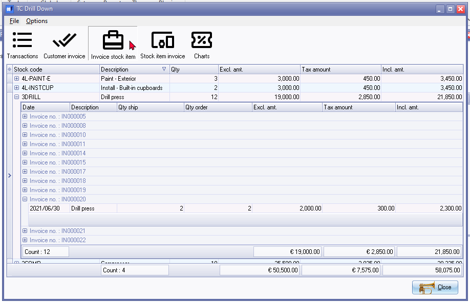
The Invoice stock item option displays all inventory items or products, showing which items were sold in each invoice. It includes details such as stock code, description, quantities, and total invoice amounts, allowing sorting and custom filtering for specific items.
Expanding a specific item reveals all invoices, posted and unposted, with quantities and total amounts displayed for each invoice, and provides options for sorting and custom filtering.
Additionally, you can print specific invoices directly from the interface by double-clicking on them.
By utilizing the Invoices stock item option of the "TC Drill Down" plugin, you can efficiently find invoices based on invoice numbers and gain insight into the stock items sold within each invoice. This feature enhances your ability to manage sales transactions, track inventory, and analyse sales performance within osFinancials.
Stock item invoice
In the Stock item invoice section of the "TC Drill Down" plugin, allows you to quickly locate invoices associated with the sale of a particular item. In this option of the "TC Drill Down" plugin, you can track which invoices issued to which debtors (customers / clients) and were used to sell specific stock items, facilitating quick access to associated sales records.
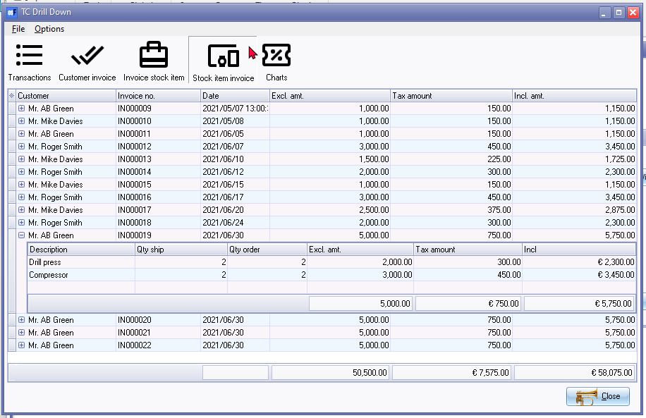
In the Stock item invoice option of the "TC Drill Down" plugin, you can track which invoices were used to sell specific stock items, facilitating quick access to associated sales records. This feature lists all customer accounts with both posted and unposted invoices, detailing items sold in each invoice. It provides invoice numbers, dates, and total amounts, and enables sorting and filtering for efficient invoice management.
Expanding invoices reveals listed stock items with quantities and total amounts, allowing further sorting and filtering for inventory items. This functionality enhances tracking of customer invoices and stock item movements, facilitating effective sales analysis within osFinancials.
By leveraging the Stock item invoice option of the "TC Drill Down" plugin, you can efficiently track sales of individual invoices stock items, identify associated customer (debtor or client) accounts, and gain insights into your stock management and sales processes within osFinancials.
Charts
In the Charts option of the "TC Drill Down" plugin, you can visualise your sales data in various formats to gain insights into your business performance. The graphs are as follows:
- Total sales:
- Total sales : Your total sales per day are displayed in a pie chart. Your inventory items or products are displayed as parts in different colors per day. It will visually display at a glance the day or days in which the most sales occurred.
- Total sales per day : Your total amount of sales per day is indicated in a bar graph. It will visually display as amounts the day or days in which the most sales occurred at a glance.
- Total quantities:
- Total sales quantities : Displays the total quantities of your inventory items or products sold during the selected dates in a pie chart. The total quantities of your inventory items or products sold will be displayed as parts in different colors per day. It will visually display at a glance the inventory items or products that are the top sellers during the selected dates.
- Total sales quantities per day: The total quantities of your stock items or products sold during the selected dates are visually represented in a bar graph. It will visually display at a glance the number of inventory items or products that are the top sellers during the selected dates. It will graphically display how certain days affect the quantities of inventory items or products.

By using the Charts section of the "TC Drill Down" plugin and exporting the data, you can effectively analyse your sales performance, identify trends and make informed business decisions based on the insights gained by visualizing your data.
Export the Data
Except the Charts option of the "TC Drill Down" plugin, all other options (i.e Transactions, Customer invoice, Invoice stock item, Stock item invoice) in the "TC Drill Down" plugin can be exported to a spreadsheet.
Once you have sorted and filtered your criteria, you can export the data in exactly the same order as displayed in the "TC Drill Down" screen.
- Once you have sorted or filtered your data, click on the File → Export menu.
- The "Save as" screen will be displayed.
- Select a directory in which you wish to export the selected data.
- Enter a file name.
- Select one of the following file formats:
- XML - Extensible Mark-up Language
- HTML - HyperText Mark-up Language
- Excel - Microsoft Excel Spreadsheet
- Text - Text file
- Click on the Save button.
Once exported, you can locate the file and open it in your preferred software, such as Microsoft Excel or LibreOffice Calc, to further analyse and visualize the data.
For example, you may use it to build graphs in or Microsoft Excel, LibreOffice Calc spreadsheets, and make powerful presentations of your data in or Microsoft PowerPoint or LibreOffice Impress.
By utilising the Charts section of the"TC Drill Down" plugin and exporting the data, you can effectively analyse your sales performance, identify trends, and make informed business decisions based on the insights gained from visualising your data.
Spreadsheets
The exported data can be easily used to build custom pivot tables and charts in spreadsheets. The following is an example of exported data in Microsoft Excel spreadsheet with charts for income and expenses exported using the "TC Drill Down":
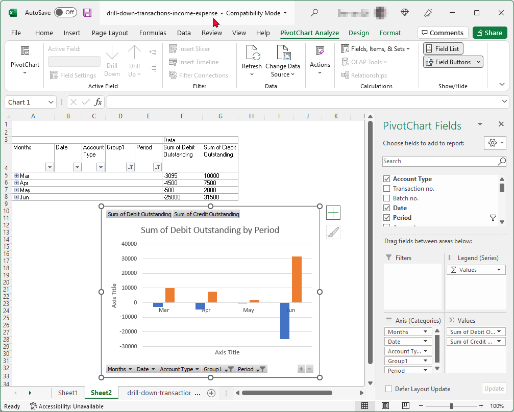
By using pivot tables and charts in Excel, you can analyse and visualise your expenses data exported from the "TC Drill Down" plugin effectively. These tools allow you to gain insights into your spending patterns, identify areas for cost optimization, and make informed financial decisions for your business.